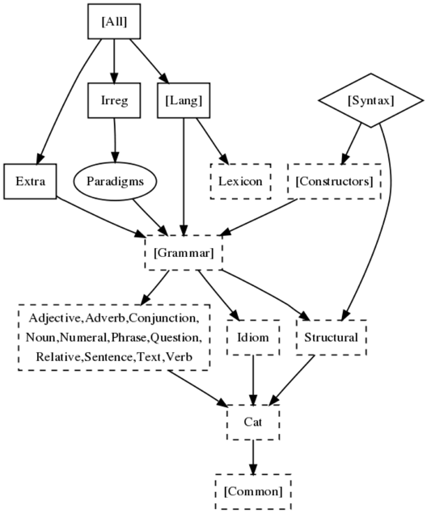

These modules give language-specific extra constructs not available via the common API.
common repository Romance (Cat, Fre, Ita, Spa) Scandinavian (Dan, Nor, Swe)
Afrikaans Bulgarian Catalan Danish Dutch English Finnish French German Italian Norwegian Persian Polish Punjabi Romanian Russian Spanish Swedish
These modules give lists of irregular words, mostly verbs. Their completeness varies.
Catalan Danish Dutch English French German Norwegian Spanish Swedish Turkish
These morphological dictionaries are extracted from open source lexica by using the resource grammar paradigms. The figures give the approximate number of lemmas.
Bulgarian 53k English 43k Finnish 42k French 92k Swedish 43k Turkish 24k
These modules are for internal use of resource grammarians, but the comments give some more linguistic explanation of the different constructs.
| module | contents |
|---|---|
| Adjective | constructors for A, AP |
| Adverb | constructors for Adv, AdV |
| Cat | lincats of all categories |
| Common | default lincats for string categories |
| Conjunction | coordination rules |
| Extra | constructs available in some languages only |
| Grammar | everything except content lexicon |
| Idiom | idiomatic constructions |
| Lang | everything (Grammar and Lexicon) |
| Lexicon | content word lexicon |
| Noun | constructors for NP, CN, Det |
| Numeral | constructors for Numeral and Digits |
| Phrase | constructors for Phr, Utt |
| Question | constructors for QS, QCl, IP |
| Relative | constructors for RS, RCl, RP |
| Sentence | constructors for S, Cl, SC |
| Structural | structural word lexicon |
| Symbol | mixtures of verbal and symbolic expressions |
| Tense | common API tense system |
| Text | constructors for Tex |
| Verb | constructors for VP, VPSlash, Comp |
